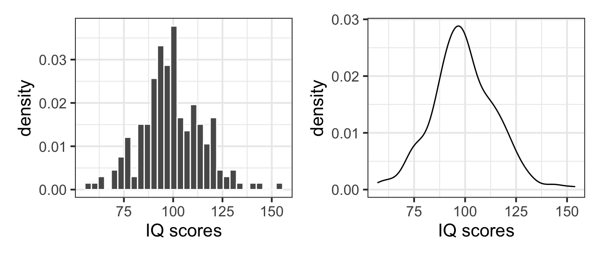
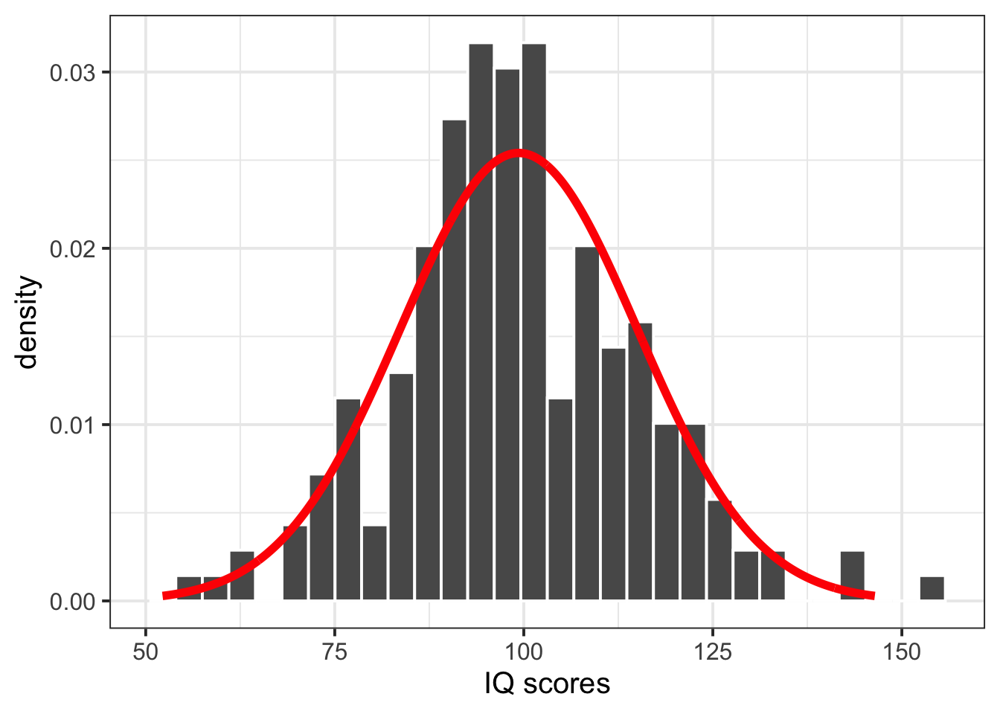

# A tibble: 3 × 3
movie IQ1 IQ2
<chr> <dbl> <dbl>
1 mov1 91 101
2 mov2 92 102
3 mov3 93 103Random Variables (Continuous)
Semester 1 - Week 10
1 Formative Report B
Instructions and data were released in week 7.
Next week: Submission of Formative report B
Next week, your group must submit one PDF file for formative report B by 12 noon on Friday the 28th of November 2025. Name your submission: Group NUMBER.LETTER Formative B.pdf
One person must submit on behalf of the entire group and let the group know when they have submitted by leaving a note on the Group Discussion Space.
To submit go to the course Learn page, click “Assessment”, then click “Submit Formative Report B (PDF file only)”.
No extensions. As mentioned in the Assessment Information page, no extensions are possible as this is a practice report.
1.1 This week’s task
Task B4
B4) Computing and plotting probabilities with a normal distribution.
Sub-steps
Below there are sub-steps you need to consider to complete this week’s task.
Tip
To see the hints, hover your cursor on the superscript numbers.
Focus on completing all of the lab tasks, and leave non-essential things like changing colours for later.
Context
As detailed last week, a new movie theatre is opening in Texas soon. The management team are thinking of innovative launch events, and they’d like to host a movie trivia night where viewers can compete to win free cinema tickets for the year! They want to make sure however that their questions aren’t too easy, or too difficult, so gave viewers an IQ test so that they could see where to pitch their questions.
According to a recent survey by World Population Review, the average IQ in Texas is 97.4. The management team decided they are satisfied with their questions’ level of difficulty if the probability of movie viewers’ having an IQ score above 97.4 is between 50% and 60%. Otherwise, they will adjust the difficulty of the questions by making them easier (if the probability is <50%) or harder (>60%).
In this lab, you will need to consider the variables IQ1 to IQ50 (i.e. the IQ score of each of the 50 audience raters for each movie) from the Hollywood movies dataset when answering the questions below.
- Reopen last week’s Rmd file, and continue building on last week’s work. Make sure you are still using the movies dataset filtered to only include the top 3 genres.1
- Consider the
IQ1-IQ50variables, are they discrete or continuous?2
README: Wide vs long data (Click to expand)
Currently the IQ data are in wide format, i.e. each movie has multiple columns providing the IQ scores for each of the 50 audience raters. However, later on we will want to plot the IQ scores of all raters across all movies. To do so, ggplot wants a single column of IQ scores into aes().
Consider this fictitious dataset in wide form:
To go from two columns of IQ scores to a single one, we can get the data in long form as follows:
df_long <- df |>
pivot_longer(IQ1:IQ2, names_to = "IQ_ID", values_to = "IQ_Scores")
df_long# A tibble: 6 × 3
movie IQ_ID IQ_Scores
<chr> <chr> <dbl>
1 mov1 IQ1 91
2 mov1 IQ2 101
3 mov2 IQ1 92
4 mov2 IQ2 102
5 mov3 IQ1 93
6 mov3 IQ2 103As you see, the above is just a different rearrangement of the same data. The function pivot_longer takes the range of columns you want to compress (IQ1 to IQ2 in this case), and the names of 2 new columns to create:
-
names_to: where the names of the columns to compress will go into - in this case, “IQ_ID” -
values_to: where the values of the columns to compress will go into - in this case, “IQ_Scores”
You can also go from long data back to wide data. To do so, use the pivot_wider function:
df_long# A tibble: 6 × 3
movie IQ_ID IQ_Scores
<chr> <chr> <dbl>
1 mov1 IQ1 91
2 mov1 IQ2 101
3 mov2 IQ1 92
4 mov2 IQ2 102
5 mov3 IQ1 93
6 mov3 IQ2 103df_long |>
pivot_wider(names_from = "IQ_ID", values_from = "IQ_Scores")# A tibble: 3 × 3
movie IQ1 IQ2
<chr> <dbl> <dbl>
1 mov1 91 101
2 mov2 92 102
3 mov3 93 103- Using the
pivot_longer()function, pivot the data so that it is in long format. Ensure the column names go into a new column called “IQ_ID”, and the values go into a column called “IQ_Scores”. Store the data in long format in a new object.3
README: Independence (Click to expand)
As each movie was rated by a different pool of 50 audience raters, the variable IQ_Scores can be considered an independent sample of IQ scores.
This is because a single audience rater didn’t appear in more than one movie. Even if the column IQ_ID says “IQ1” for multiple movies, the rater with id “IQ1” for movie “American Reunion”, say, won’t be the same rater with id “IQ1” for movie “Battleship”.
- Plot the sample distribution of the
IQ_Scoresvariable either using a histogram or density plot.4
- What kind of distribution does your plot follow? Estimate the parameters of your distribution from the sample data.5
- Plot the fitted normal distribution on top of the sample distribution. Is the normal distribution a good fit?6
- Using the normal distribution, calculate the following:7
- The value of IQ that 25% of movie watchers have scores equal to or less than
- The value of IQ that 50% of movie watchers have scores equal to or less than
- The value of IQ that 75% of movie watchers have scores equal to or less than
How do the normal quartiles computed above compare to those obtained from the
summary()function? If they are similar, this will provide further evidence that the normal distribution is a good model for IQ scores.Using the normal distribution, calculate the probability of a movie viewer having an IQ score >97.4, i.e. more than the Texas average.8
Based on the probabilities you have reported above, do you think that the new movie theatre should simplify the questions for their trivia night, make them harder, or make no changes? Justify your answer.
In the analysis section of your report, write up a summary of what you have reported above, using proper rounding to 2 decimal places and avoiding any reference to R code or functions.
2 Worked example
The dataset available at https://uoepsy.github.io/data/RestaurantTips2.csv was collected by the owner of a US bistro, and contains 99 observations on 10 variables. It is a subset of the RestaurantTips.csv data presented in the past weeks, focusing only on parties of 2 people.9
Following from the bistro owner’s interest in whether they should consider introducing a 2 for 1 coffee deal or a loyalty scheme, they are also considering running a weekly quiz night in the bistro. The quiz is only open to pairs of individuals, and given that the bistro is located in a student area, the owner wants to make the quiz very demanding, and therefore wants the questions to be at a level where someone with a ‘superior’ or ‘well above average’ IQ (i.e., scores 120+) would be challenged. We need to advise the bistro owner whether the questions that they have generated are at their desired level of difficulty.
| Variable Name | Description |
|---|---|
| Bill | Size of the bill (in dollars) |
| Tip | Size of the tip (in dollars) |
| Credit | Paid with a credit card? n or y |
| Guests | Number of people in the group |
| Day | Day of the week: m=Monday, t=Tuesday, w=Wednesday, th=Thursday, or f=Friday |
| Server | Code for specific waiter/waitress: A, B, or C |
| PctTip | Tip as a percentage of the bill |
| HadCoffee | Number of guests in the group who had coffee |
| IQ1 | Score on IQ test for guest 1 |
| IQ2 | Score on IQ test for guest 2 |
library(tidyverse)
tips2 <- read_csv("https://uoepsy.github.io/data/RestaurantTips2.csv")
head(tips2)# A tibble: 6 × 10
Bill Tip Credit Guests Day Server PctTip HadCoffee IQ1 IQ2
<dbl> <dbl> <chr> <dbl> <chr> <chr> <dbl> <dbl> <dbl> <dbl>
1 23.7 10 n 2 f A 42.2 2 93 100
2 32.0 5.01 y 2 f A 15.7 2 96 98
3 17.4 3.61 y 2 f B 20.8 2 94 99
4 15.4 3 n 2 f B 19.5 2 99 108
5 18.6 2.5 n 2 f A 13.4 2 129 106
6 21.6 3.44 n 2 f B 16 2 82 118- If we were asked to describe what kind of variables
IQ1andIQ2were, and to comment on the kind of probability distribution it may follow, we could say:
IQ1 and IQ2 represent the IQ scores of each individual within a group of two. These are both continuous variables that could be modeled by a normal distribution.
- We could transform the
tips2dataset from wide to long format using the following command:
tips2_long <- tips2 |>
pivot_longer(IQ1:IQ2, names_to = "ID", values_to = "IQ_Scores")
tips2_long# A tibble: 198 × 10
Bill Tip Credit Guests Day Server PctTip HadCoffee ID IQ_Scores
<dbl> <dbl> <chr> <dbl> <chr> <chr> <dbl> <dbl> <chr> <dbl>
1 23.7 10 n 2 f A 42.2 2 IQ1 93
2 23.7 10 n 2 f A 42.2 2 IQ2 100
3 32.0 5.01 y 2 f A 15.7 2 IQ1 96
4 32.0 5.01 y 2 f A 15.7 2 IQ2 98
5 17.4 3.61 y 2 f B 20.8 2 IQ1 94
6 17.4 3.61 y 2 f B 20.8 2 IQ2 99
7 15.4 3 n 2 f B 19.5 2 IQ1 99
8 15.4 3 n 2 f B 19.5 2 IQ2 108
9 18.6 2.5 n 2 f A 13.4 2 IQ1 129
10 18.6 2.5 n 2 f A 13.4 2 IQ2 106
# ℹ 188 more rowspivot_longer()
Pivot longer takes “wide” data and transforms them to “long” form. An example is given below:
# A tibble: 3 × 3
a x1 x2
<dbl> <dbl> <dbl>
1 1 11 21
2 2 12 22
3 3 13 23long_toy_data <- toy_data |>
pivot_longer(x1:x2, names_to = "x", values_to = "score")
long_toy_data# A tibble: 6 × 3
a x score
<dbl> <chr> <dbl>
1 1 x1 11
2 1 x2 21
3 2 x1 12
4 2 x2 22
5 3 x1 13
6 3 x2 23- We can plot the sample distribution of the
IQ_Scoresvariable either using a histogram or a density plot.
Let’s plot both the histogram and density plot for instructional purposes only, in a report you would only report one of the two as they show similar information. We plot both now for instructional purposes and, in particular, we ask you to focus on the differences in the y axes.
library(patchwork)
plt_hist <- ggplot(tips2_long, aes(x = IQ_Scores)) +
geom_histogram(colour = 'white') +
labs(x = "IQ scores")
plt_dens <- ggplot(tips2_long, aes(x = IQ_Scores)) +
geom_density() +
labs(x = "IQ scores")
plt_hist | plt_dens As you will notice, the plot on the left panel shows counts on the y axis, i.e. the absolute frequency of each bin interval. The plot on the right panel, instead, shows the density on the y axis. If we wanted to plot on top of the histogram a normal curve, we would need to change the y axis of the histogram to be a comparable measure, i.e. also a density rather than a count.
You can do so by adding y = after_stat(density) in the aes() specification, and you can now see that both y axes agree:
plt_hist <- ggplot(tips2_long, aes(x = IQ_Scores, y = after_stat(density))) +
geom_histogram(colour = 'white') +
labs(x = "IQ scores")
plt_dens <- ggplot(tips2_long, aes(x = IQ_Scores)) +
geom_density() +
labs(x = "IQ scores")
plt_hist | plt_dens 
Fitting a distribution
Fitting a normal distribution to data involves estimating the parameters of the distribution from the data. In other words, we want to find values for \(\mu\) and \(\sigma\) from the variable IQ_Scores in the our data, and we denote the estimated parameters with \(\hat{\mu}\) and \(\hat{\sigma}\). You create those symbols, you can type in the Rmd file $\hat{\mu}$ and $\hat{\sigma}$.
-
We can now fit a normal distribution to the variable. To do so, we need to start by estimating the parameters of the normal distribution:
- \(\hat{\mu}\), the mean IQ score in the sample
- \(\hat{\sigma}\), the estimated standard deviation in the sample
# The mean of the sample of IQ scores
tips_mu_hat <- mean(tips2_long$IQ_Scores)
tips_mu_hat[1] 99.33333# The standard deviation of the sample of IQ scores
tips_sigma_hat <- sd(tips2_long$IQ_Scores)
tips_sigma_hat[1] 15.7025- We can then compare the sample distribution to the normal distribution, and comment on whether the normal fit is good:
First we will create a tibble with the normal distribution at a grid of x values.
Why M \(\pm\) 3 * SD?

Typically, the interval M \(\pm\) 3 * SD includes approximately 100% of the distribution values (to be specific, 99.7%). See here for more information!
If you wanted, you can always extend the interval to be M \(\pm\) 4 * SD or M \(\pm\) 5 * SD if you want to extend your normal distribution plot.
We can plot the sample distribution and put the fitted normal distribution on top:
bistro_iq <- ggplot() +
geom_histogram(data = tips2_long, aes(x = IQ_Scores, y = after_stat(density)),
color = 'white') +
geom_line(data = normal_distr, aes(x = x_grid, y = y_grid),
color = 'red', linewidth = 2) +
labs(x = "IQ scores")
bistro_iq

In the code above, linewidth = 2 changes the default line thickness from 1 to 2. You can also change the line type to be dashed, if you wish to, using linetype = 2.
The normal distribution seems to be a good fit for the sample distribution, as the shape of the histogram tends to agree with the normal distribution across all possible values. The histogram appears to be symmetric around the mean and follows the normal bell-shaped curve.
- We can calculate the value of IQ that a specific percentage of bistro customers have scores equal to or less than, for example:
s.t. means such that
To calculate the value of IQ that 25% of bistro customers have scores equal to or less than, we can compute the following:
qnorm(p = 0.25, mean = tips_mu_hat, sd = tips_sigma_hat)[1] 88.74216To calculate the value of IQ that 50% of bistro customers have scores equal to or less than, we can compute the following:
qnorm(0.5, tips_mu_hat, tips_sigma_hat)[1] 99.33333To calculate the value of IQ that 75% of bistro customers have scores equal to or less than, we can compute the following:
qnorm(0.75, tips_mu_hat, tips_sigma_hat)[1] 109.9245- We can also comment on how these normal quartiles values compare to those from the
summary()output:
summary(tips2_long$IQ_Scores) Min. 1st Qu. Median Mean 3rd Qu. Max.
57.00 90.25 98.00 99.33 109.75 154.00 The quartiles from the fitted normal distribution are similar to the sample ones (i.e., those returned by summary()). This provides further evidence that a normal distribution is a good model for the sample of IQ scores.
- To summarise the IQ scores of the bistro customers, we could compute the interval comprising the middle 95% of the customers IQ scores:
If we want 0.95 probability in the middle, we need to split the leftover 0.05 probability equally between the two tails: 0.025 in the left, and 0.025 in the right. However, qnorm() wants the probability to the left, so we will give 0.025 and 0.975 = 1 - 0.025 as values.
95% of the bistro customers had IQ scores between 69 and 130.
Alternatively
For a classification of IQ scores, see the Wechsler Intelligence Scales classification table.
- We can use the fitted normal distribution to calculate the probabilities, for example:
To calculate the probability that a bistro customer has an IQ below 120, we can compute the following:
pnorm(120, tips_mu_hat, tips_sigma_hat)[1] 0.9059362To calculate the probability that a bistro customer has an IQ above 120, we can compute the following:
# P(X > 120)
pnorm(120, tips_mu_hat, tips_sigma_hat, lower.tail = FALSE)[1] 0.09406377or alternatively
# 1 - P(X < 120)
1 - pnorm(120, tips_mu_hat, tips_sigma_hat)[1] 0.09406377To calculate the probability that a bistro customer has an IQ above 100, we can compute the following:
# P(X > 100)
pnorm(100, tips_mu_hat, tips_sigma_hat, lower.tail = FALSE)[1] 0.4830676or alternatively
# 1 - P(X < 100)
1 - pnorm(100, tips_mu_hat, tips_sigma_hat)[1] 0.4830676To calculate the probability that a bistro customer has an IQ between 100 and 130, we can compute the following:
P(a < X < b) = P(X < b) - P(X < a) when a = 100 and b = 130 so that P(100 < X < 130) = P(X < 130) - P(X < 100)
Example writeup
Figure 1 displays the distribution of IQ scores, with a normal distribution superimposed as a red curve. Most of the bistro customers (95%) have IQ scores between 69 and 130. Based on our analysis above, 48% of bistro customers are likely to have IQ scores above 100, though there is less than a 10% chance that customers have superior IQ scores (i.e., above 120). Therefore the bistro owner has set the questions to his quiz at the desired level of difficulty - the vast majority of his customers should find the questions extremely challenging. However, if the Bistro owner did want to make some changes, they should only consider making the quiz more difficult.
3 Student Glossary
To conclude the lab, add the new functions to the glossary of R functions.
| Function | Use and package |
|---|---|
dnorm() |
Calculates probability density values for a normal distribution at specified points (base R) |
pnorm() |
Calculates cumulative probabilities \(P(X \leq x)\) for normal distributions (base R) |
pivot_longer() |
Reshapes data from “wide” to “long” format by converting multiple columns into name-value pairs (tidyverse) |
seq() |
Generates regular sequences of numbers with specified start, end, and increment values or length (base R) |
geom_histogram() |
Creates histogram plots showing the distribution of numeric data divided into bins (tidyverse) |
geom_density() |
Creates smooth density curves showing the distribution shape of numeric variables (tidyverse) |
geom_line() |
Adds lines to a plot by connecting points (tidyverse) |
after_stat() |
Accesses transformed variables calculated during plotting (e.g., density for histograms) (tidyverse) |
References
Lock, Robin H, Patti Frazer Lock, Kari Lock Morgan, Eric F Lock, and Dennis F Lock. 2020. Statistics: Unlocking the Power of Data. John Wiley & Sons.
Footnotes
Hint: access the Rmd file from the Group Discussion Space.
If last week’s driver hasn’t uploaded it yet, please ask them to share it with the group via the Group Discussion Space, email, or Teams.
To download the file from the server, go to the RStudio Files pane, tick the box next to the Rmd file, and select More > Export.↩︎Hint: Technically, the values you see in the data are discrete. In Psychology, however, IQ is assumed to be a continuous variable and it’s only discrete due to a limitation of our measuring ability.
In other words, if we were able to measure it more accurately, there would be no reason why this couldn’t be continuous and we could imagine getting an IQ of 126.4374325677…
To summarise, IQ is an example of a variable that is considered as coming from a continuous scale, but it can only be measured with discrete precision.↩︎-
Hint: When the data is wide, we can make it long using
pivot_longer(). When we make data longer, we’re essentially making lots of columns into 2 longer columns. Below, in the animation, the wide variable x, y and z go into a new longer column called"name"(specified by the argumentnames_to = "name") that specifies which (x/y/z) it came from, and the values get put into the"val"column (specified by the argumentvalues_to = "val").↩︎
Source: https://fromthebottomoftheheap.net/2019/10/25/pivoting-tidily/ -
Hint: Here you will need to specify
geom_histogram()orgeom_density().To save space, if you wish to plot this next to another plot, recall that you can use the
patchworkpackage to arrange plots either adjacent to one another (via|) or stacked (via/).↩︎ Hint: A normal distribution has two parameters, the mean (\(\mu\)) and the standard deviation (\(\sigma\)). The mean specifies where the normal distribution is centred at along the x-axis. The standard deviation specifies how spread out the normal distribution is.↩︎
-
Hint: Here you will need to consider using
dnorm(), as you are interested in the normal distribution at different values of x.First, you will need to create a tibble with two columns:
- The first column will contain a sequence of x-values (a grid) for which you want to compute the normal distribution curve at.
- The second column will contain the y-values: the normal distribution at that sequence of x-values.
norm_distr <- tibble( IQ_Grid = ... , IQ_Norm_Distr = ... )This way, you will have the x-values (IQ_Grid) and the heights (IQ_Norm_Distr) at those x-values.
When specifying your x-axis sequence, consider how many standard deviations above and below the mean to give. Typical values are 3, 4, or 2 - try! Alternatively, you can go from the minimum of your data to the maximum.
For the y-values, use thednorm(x, mean, sd)function with inputs being the x-axis grid, the sample mean, and sample standard deviation.
Plot this on top of the histogram/density usinggeom_line(data = ?, aes(x = ?, y = ?)). If you are using a histogram, make sure the y-axis are comparable: counts vs density isn’t appropriate!↩︎ -
Hint:
You are being asked to calculate the quantile x such that P(X <= x) is 0.25, 0.50, and 0.75 respectively. That is, you are asked to find the first, second, and third quartiles respectively.
To obtain the quantile of a normal distribution, use the
↩︎qnorm(p, mean, sd)function. This will return the x-value that has a probability p to its left. -
Hint: Here you are being asked to calculate P(X > x) = 1 - P(X <= x).
Recall that in a normal distribution:
- P(X <= x) = P(X < x)
- P(X >= x) = P(X > x)